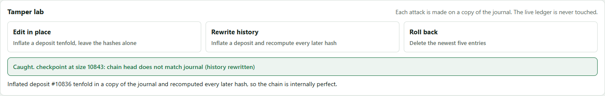

Sportsbook Ledger Internals
An append-only, double-entry money ledger for a sportsbook player account platform. Every bet, deposit and payout is hash-chained, placed in a Merkle tree and periodically signed, so anyone holding the public key can prove nothing was altered, removed or invented. One writer thread orders every transaction, which makes double spends structurally impossible rather than merely unlikely.
| player:42:cash:EUR | −10.00 |
| player:42:open-bets:EUR | +10.00 |
| Σ EUR | 0.00 |
- prev
- 9f3a51c0…
- leaf
- 41c7e2b9…
- chain
- 740174cf…
- signed
- checkpoint at 1500 · Ed25519
Illustrative record: every entry is balanced, linked to the one before it, and covered by a signed checkpoint.
Requirements
The requirements this ledger is built to meet, each with how it is met. In the code means implemented and tested in this repository; Designed means specified in the cloud architecture below but not yet built.
Money is always right
- Money is never created or destroyedIn the code
Every transaction is double-entry and its postings must sum to zero in each currency, checked when it is written and again whenever the ledger is replayed.
- No double spend, no negative balanceIn the code
Each shard has a single writer that applies transactions strictly in order, so two requests for the same money can never both see it available.
- Exactly-once, even with retriesIn the code
Every request carries an idempotency key, and every outcome of a bet shares one settlement key, so retries, double taps and redelivered feeds never move money twice.
- No balance shown that was never realIn the code
Balances become visible only after the entry is safely on disk, and rejections wait until whatever caused them is durable too.
Nothing can be quietly changed
- Tamper-evident historyIn the code
Entries are hash-chained and placed in a Merkle tree, so altering, removing or inserting any entry changes every hash after it.
- Rewrites and rollbacks are caughtIn the code
Signed tree heads expose any rebuilt or truncated history, even if every hash was recomputed, because a forger cannot produce the signature.
- Independently verifiableIn the code
Anyone holding the public key can check a single entry with a Merkle proof, or the whole ledger with the offline verifier.
- Provable under concurrencyIn the code
The regulatory test suite checks properties R1 to R6 against the ledger's own replayed history while many devices hammer one account.
Always on, at any scale
- No acknowledged bet is ever lostPartly in the code
A receipt is issued only after fsync, and with replication only after two of three zones have stored the entry; torn writes are quarantined rather than trusted.
- Survives the loss of a zoneDesigned
Each shard runs three replicas across three availability zones, and a new leader takes over within seconds.
- Absorbs huge peaksPartly in the code
Players are spread across many independent shards, group commit turns extra load into bigger batches, and settlement storms queue in Kafka.
- Recovers from losing a regionDesigned
A pilot-light DR region abroad is activated through a key ceremony with M-of-N custodians, with the regulator notified first.
Fit for regulators and the business
- Data stays in countryDesigned
All data is encrypted with in-country HSM keys before it is replicated, so the DR region only ever holds ciphertext it cannot read.
- Separation of dutiesDesigned
A continuous verifier runs in a separate audit account, and no human holds standing access to production data or keys.
- Not locked to one cloudDesigned
The design runs on AWS, Azure, or any conformant Kubernetes using open standards, including an in-country data centre.
- Readable and changeableIn the code
The code is commented throughout, has no runtime dependencies beyond the JDK, and this guide is built from the real source.
How it works
Select a component to see what it does, where it lives and what it guarantees. Solid arrows are the write path; dashed arrows are reads and audits.
Why editing history fails
Each entry stores the hash of the one before it, so changing any old amount breaks every link after it. A careful attacker can recompute the whole chain, which is why the ledger also signs its head. Change an amount below, then switch to the attacker's approach and watch the signed checkpoint catch it anyway.
Five ledger entries
What the ledger sees on restart
Replay runs these checks in Replayer.apply and CheckpointCheck.verify (Replay.kt). The signing key never lives with the data, so the attacker cannot produce a matching signature.
Proving one bet without the whole ledger
The Merkle tree lets a player or regulator confirm a single entry using only log₂(n) hashes. Select a bet. The dashed amber boxes are the audit path the ledger hands over; the green boxes are what the verifier recomputes on its own, ending at the signed root.
Select a leaf
At a billion bets the proof is about 30 hashes, roughly 1 KB. See MerkleVerify.inclusion (Merkle.kt), which needs nothing from the operator but the proof and the signed root.
Watch the code run
Pick a scenario and step through it. The left pane shows the real Kotlin source with the executing line highlighted; the right pane shows each thread, the queue, the writer's batch, balances and the journal on disk as they change. Hashes are real SHA-256 over a simplified encoding, abbreviated.
Threads
Call stack · variables
Pipeline
Balances · committed (staged)
Journal on disk
Log
The web console
The five-device test captures its customer before loading the balance, aborts if selection changes before betting, and never displays late results in another customer's view.
Startup failures close acquired services and release the ledger's writer lock before reporting the original error.
Automated customer IDs use locale-independent ASCII digits so browser tiles, events and ledger accounts refer to the same customers.
Simulator money operations await their original ledger futures before recording acceptance or refusal. Delayed replies cannot appear as rejected transactions that later commit.
Simulator seed deposits use stable customer-specific amounts. Restarting recognizes previously committed seed references, including older random seeds, without creating conflicts or duplicate funding.
Simulator counters and events are scoped to one run, so restarting never counts late work from the previous run.
Simulator action errors appear beside the controls, remain visible through refreshes and wall resizing, and clear after a successful action.
Resizing the wall retains existing customers' activity, balances and refusal state. Late cash-out replies stay with their original customer, and definitive bet rejections unlock the stake for correction.
Simulated betting reads a current-open fixture index, not a sorted copy of every historical fixture definition.
Automatic fixture rounds resume an unfinished settlement with its already-persisted result and keep a per-fixture task guard, so overload retries safely without duplicating concurrent work.
Fixture definitions and results are flushed before they become visible to bets or settlements. On restart, saved fixtures are reconciled with ledger placements and outcomes; missing or contradictory definitions are frozen rather than guessed.
Money crosses the web API as decimal strings of minor units. Browser input parsing and formatting use exact integer arithmetic, so large balances and decimal amounts do not pass through floating-point rounding.
An uncertain customer deposit or withdrawal retains its original player, amount and idempotency reference; retrying cannot silently turn it into a different money movement.
The operator fixture list keeps every unfinished fixture visible and limits only completed history to the latest 30 entries.
Customer and operator polling preserves keyboard focus by customer, bet, entry or fixture/result identity when the same control still exists, without scrolling or restarting keyboard navigation.
Customer bet lists read the newest 40 placements from that customer's entry index, rather than scanning all customers' bets.
Operator statistics read current-open indexes; settled history and empty fixture buckets do not accumulate in their refresh path.
Independent audit snapshots reread checkpoint records from byte zero through the captured checkpoint's position. Unverified tree sizes cannot exclude tampered history. Player audits reconcile posting replays with immutable engine account states at each account's own last sequence.
Checkpoint signing times in the table and proof selectors come from the signed timestamp, never the separate JSON time field.
Checkpoint history and its scan offset are published together only after a successful scan, so a corrupt later record cannot duplicate earlier history on retries.
Run ./gradlew web (Windows: .\gradlew.bat web) and open http://localhost:8080. Four views share one live ledger, so anything done in one appears in the others. These screenshots are captured from the running console by scripts/capture-screenshots.py.
Use --data <folder> to retain the ledger, signing key, fixture definitions and results across restarts. Legacy bets whose fixture result was never saved are frozen instead of being assigned a guessed outcome. The demo has no authentication; the server rejects cross-origin browser mutations and invalid hosts.
For LAN access, use --host 0.0.0.0 --allowed-host ledger.example (or --host :: for IPv6 wildcard binding). The bind address and allowed request hosts are separate. Repeat --allowed-host for exact hostnames or IP addresses without schemes, ports or wildcards; loopback access remains available. This exposes an unauthenticated demo to anyone who can reach it.
Following a link from another site can open the console, while Host validation and mutation origin checks stay enforced. Request IDs work on LAN HTTP origins; browser cryptographic verification requires WebCrypto in a secure context (HTTPS or localhost).
The repository includes a GitHub Actions deployment for the existing ledger AKS cluster in Sweden Central. Follow deploy/README.md for the one-time Azure OIDC, registry and namespace setup. Pushes to main test the container and deploy one ledger instance on a persistent Azure disk, with an Azure public DNS name and automatic HTTPS from Caddy. Updates briefly interrupt service; this remains an unauthenticated synthetic-money demo, not a production wallet. The proxy preserves Host, Origin and Referer; --public-origin https://<hostname> accepts only the configured HTTPS origin without trusting forwarding headers. Ledger data and signing keys stay on the cluster's in-region disk, not in the image.



What the tests prove
MultiDeviceWalletTest puts one player on six devices at once while a settlement feed redelivers results, three screens poll the balance and a regulator signs checkpoints. Every property is then checked against the ledger's own replayed history rather than the wallet's final numbers. In a typical run, about 13 million balance reads saw zero balances the ledger never held.
| Property | Guarantee | How it is enforced | Tests |
|---|---|---|---|
| R1 | No double spend | One writer applies transactions in order; later requests in a batch see earlier ones through the overlay. | , , , , |
| R2 | Never negative, at any instant | AccountPolicy checked on every posting; replay re-checks every historic balance. | , |
| R3 | No phantom balances | Read structures are updated only after fsync; rejections wait for their batch to commit. | |
| R4 | Exactly-once | Idempotency keys with content fingerprints; one settlement key per bet for every outcome. | , , , , |
| R5 | Full reconciliation | Independent model built from client receipts must equal the ledger to the cent. | , |
| R6 | Provability | Inclusion proof for every receipt; consistency proofs between checkpoints signed mid-storm. | , , , |
Every test, with its source
Select a test to read exactly what it does; line numbers match the repository. Test names in the table above jump straight to the matching test.
Cloud architecture
How the ledger runs in production when every bet must be exact, a zone outage must lose nothing, and a World Cup final can multiply traffic a hundredfold in seconds. Switch between AWS, Azure and a cloud-portable build, select any component for the reasoning behind it, run a failure drill, or drag the load slider to see where the pressure goes.
Peak load model
Illustrative model: 64 shard groups, about 25,000 transactions per second of CPU headroom per shard leader, a 1.5 ms commit round (cross-zone quorum plus fsync), and 2,000 requests per second per API pod. Benchmark your own hardware before relying on any figure here.
Consistency: shard by player
A bet touches only one player's cash and escrow, so every account a transaction needs lives on one shard, and each shard keeps the code's single-writer guarantee. No distributed transactions, no two-phase commit. House accounts become per shard (house:revenue:EUR:s17) and are summed for reporting, which keeps every entry inside one hash chain.
Resilience: quorum, then acknowledge
Each shard is three replicas in three availability zones. The leader replicates every group-commit batch and only issues receipts once two replicas have fsynced it, so losing a whole zone loses no acknowledged bet. A new leader is elected in seconds; clients retry with the same idempotency keys and get their original receipts.
Residency: ciphertext travels, keys don't
Every journal segment, snapshot and stream record is encrypted inside the primary region with keys that never leave its HSMs, before replication starts. The DR region only ever holds bytes it cannot read. It becomes able to read them only after a declared disaster, when key custodians bring the keys there in a recorded ceremony that the regulator is told about.
Elasticity: absorb, don't reshard
The stateless API scales out in seconds and is pre-scaled from the fixture calendar. Inside a shard, group commit turns more traffic into bigger batches rather than more fsyncs. Settlement storms at the final whistle queue in Kafka and drain at full speed. Shards are added ahead of events, never during them.
Already in this codebase
- Single-writer engine with group commit and lock-free reads
- Idempotency keys with content fingerprints, so retries after failover are safe
- Bounded queue with
OverloadedExceptionfor back-pressure - Signed tree heads behind a pluggable
TreeHeadSigner - Offline
LedgerVerifierfor the audit account
Needed for this architecture
- Raft replication of journal batches with quorum fsync before receipts
- Term-based fencing in place of the local directory lock
- Shard router and per-shard house accounts
- Journal segment rotation and upload to WORM storage
- Change-data-capture publisher to the event stream
- Application-level envelope encryption of segments before replication
- Restore tooling that decrypts, replays and checks against the regulator's last signed head
- gRPC service wrapper and an HSM-backed signer
Files and running
Ledger.ktEngine: queue, writer thread, group commit, read API, recovery.SportsbookWallet.ktPAM API: deposits, withdrawals, bets, exactly-once settlement.Replay.ktBalance rules, journal replay checks, checkpoint verification.Journal.ktCRC-framed append-only file, fsync, torn-write recovery, directory lock.Merkle.ktIncremental root, inclusion and consistency proofs and verifiers.Signing.ktTree heads, Ed25519 signer interface (plug in an HSM or KMS).Hashes.kt · EntryCodec.ktDomain-separated SHA-256 and the canonical byte format.LedgerVerifier.ktOffline auditor that needs only the files and a public key.web/Web console: read model, fixtures and betting, simulator, regulator tools, HTTP API../gradlew test # full suite: Merkle, integrity, concurrency, multi-device regulatory suite, web console
./gradlew run # demo: 16 threads of betting, then an independent audit and proofs
./gradlew web # web console at http://localhost:8080
# on Windows: gradlew.bat test, gradlew.bat run
Before production
Keep the signing key in an HSM or cloud KMS by implementing TreeHeadSigner. Publish signed tree heads somewhere you do not control, such as a regulator endpoint or a transparency log, so even the operator cannot quietly fork history. Entries are held in memory for proofs and lookups; at very large scale move them to an indexed store or tile-based Merkle storage. Changing AccountPolicy changes what replay accepts, so version it alongside the journal.